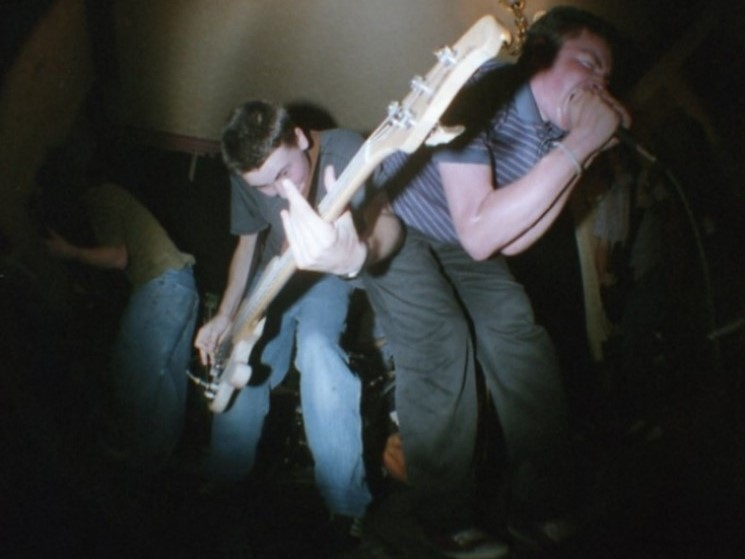
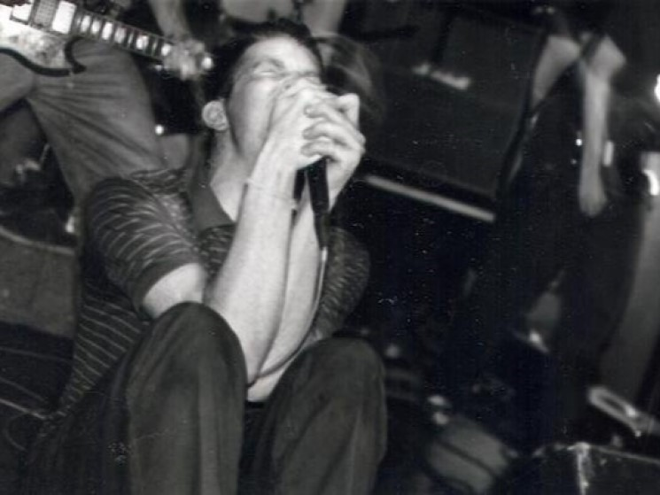
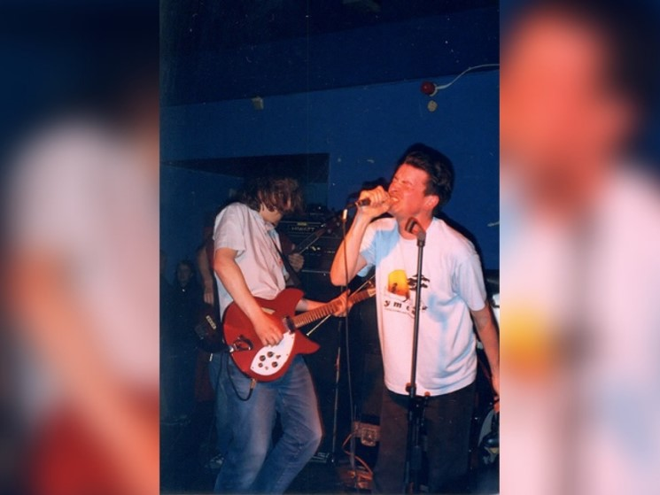
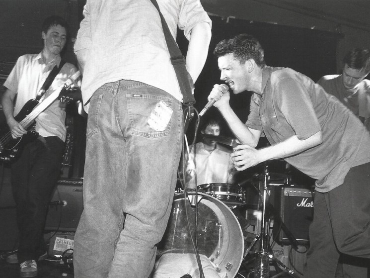
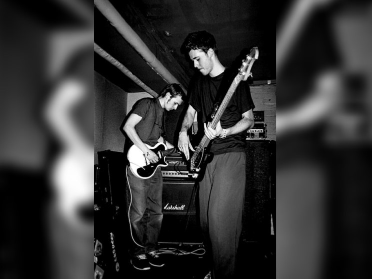

|





|
Два следующих года для группы сложились вполне удачно, у Bob Tilton выходит вторая по счету семёрка, в 96 известный персонаж Джон Пилл пригласил ребят записать сессию для своего шоу на BBC Radio One. Несколько месяцев спустя Subjugation издали долгожданный и самый хитовый лонгплей группы.
На самом деле 96'ой был очень особенным временем, внутри независимой британской сцены, люди просто сходили с ума на
концертах, начиная от Spy Versus Spy и кончая Mogwai. Конечно же Bob Tilton были не исключением, лонгплей просто
разлетелся среди фанатов эмо и панка. На протяжении еще трёх лет группа рубилась на концертах по всей Британии,
вернувшись домой в декабре 1998 они записали свой второй альбом на лейбле Sousaphon Recordings, под названием The
Leading Hotels Of The World, вскоре после этого, барабанщик Алан Гейни переехал в Лондон, что послужило одной из
причин распада группы весной 1999 года.
После Боб Тилтон, вокалист Саймон Фирн пел в группе Wolves Of Greece, остольные участники замутили проект I Am
Spartacus. Гитарист Нейл Джонсон так же играл в Wolves Of Greece, сейчас он играет в группах Savoy Grand и Andy
Clambake & The Resurrection Men
Посетите
Discogs